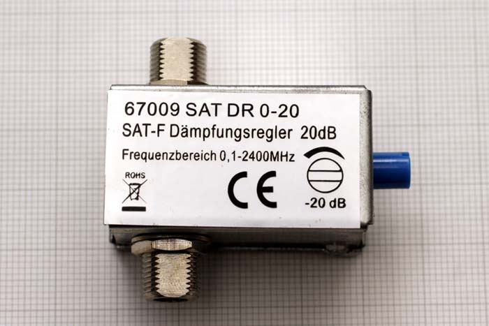
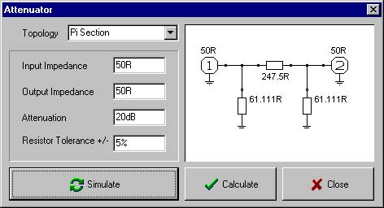
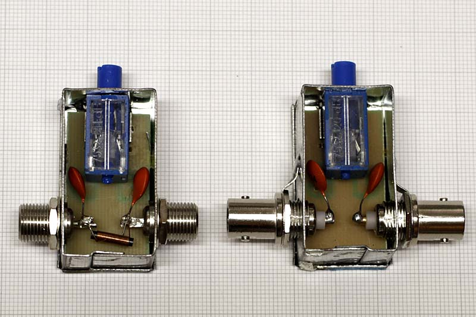

Radio & antenne
ATTENUATORE VARIABILE
0-20dBm 100 kHz - 3000 MHz
Premessa
Dicembre 2016
A cosa serve un attenuatore? a ridurre valore di tensione RF a un valore più basso, senza perdere il valore di impedenza di accoppiamento della linea sempre a 50 OHM.
Può capitare che il segnale ricevuto sia troppo alto così da saturare l'ingresso del ricevitore, per cui se non è possibile attenuare direttamente nel ricevitore bisogna ridurre il segnale di antenna tramite partitori resistivi adatti alla RF.

E facile trovare attenuatori fissi e variabili usati su impianti di antenna TV e anche per uso in strumentazione elettronica.
Attenuatori per uso ricezione radio sono più difficili da trovare e sono costosi.
Utilizzando un attenuatore variabile per uso TV-SAT come quello in foto si possono avere buoni risultati anche in campo ricezione radio. Utile fare qualche modifica per adattare il prodotto alla ricezione radio.
Descrizione

Questo è lo schema di un attenuatore fisso con valore di attenuazione di 20dB calcolato con il programma RFSIM99.
Impostando i valori di impedenza ingresso e uscita e il valore di attenuazione otteniamo il calcolo delle resistenze per la configurazione a Pi greco.
Inserendo il partitore sull'ingresso del ricevitore o della strumentazione sempre a 50 Ohm otterremo una riduzione di 20dB pari a 100volte il valore in ingresso, cioè 1V diventa 0,01V pari a 10mV.
Per realizzare un attenuatore variabile dovremmo modificare il valore di tutte e tre le resistenze, per mantenere costante il valore ingresso uscita.
Il tutto è facilmente ottenibile con un trimmer multiplo come appunto quello di colore blu contenuto nell'attenuatore per TV-Sat. E' una resistenza variabile multigiri, con all'interno diverse spazzole che vanno sulla piste di carbone, lo spostamento realizza la variazione a impedenza costante.

Queste sono le semplici modifiche da effettuare sull'attenuatore commerciale per uso Tv-Sat, bisogna togliere l'induttore per il passaggio della DC saldato tra i due connettori ed eventualmente saldare due connettori più usati in campo radio come i BNC, o anche gli SMA da pannello.
L'attenuatore è per i 75 ohm di linea, andando a 50 ohm si ottengono praticamente gli stessi risultati di riduzione segnale, per ricezione direi che va bene così, mentre per chi lo vuole usare con strumentazione è bene saldare una resistenza da 150 ohm a impasto antiinduttiva su ognuno dei due connettori verso massa così da adattare ingresso e uscita a 50 ohm.
Ruotando il trimmer blu è possibile ottenere la variazione dell'attenuazione. L'attenuatore viene dato per una gamma di frequenze da 0,1 - 2400 MHz.
Provato con strumentazione arriva tranquillamente a 3000 MHz, e in basso si comporta bene fino a 50-100 kHz ma può scendere anche di più, la frequenza minima è limitata dai due condensatori ceramici presenti nello scatolotto metallico, sono da 220nF, esagerando si possono portare a 680nF così da essere sicuri di arrivare fino a 10 kHz senza grandi perdite. Per contro se si ha già un isolamento galvanico del segnale in altri punti della discesa, direi che i condensatori si possono anche togliere collegando direttamente il trimmer blu, all'ingresso e uscita. Si è verificato che il trimmer è simmetrico quindi non sono vincolanti i connettori ingresso/uscita, si può collegare dritto o invertito, il risultato in fatto di attenuazione è sempre lo stesso.
La prova in ricezione è stata fatto con l'antenna MiniWhip e ruotando il trimmer blu, si è avuto una riduzione di segnale su tutta la gamma ricevibile, e appunto le stazioni più forti sono state attenuate così da migliorare la ricezione e disturbare meno a livello di intermodulazione le ricezioni più basse.
L'attenuatore va montato dietro o vicino al ricevitore così da effettuare facilmente la regolazione, inoltre deve essere a valle di quelle antenne che richiedono l'alimentazione coassiale.
In pratica con la spesa di pochi Euro si ottiene un comodo attenuatore per uso ricezione e laboratorio.
© Roberto Chirio: all rights reserved.